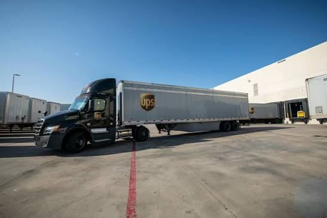
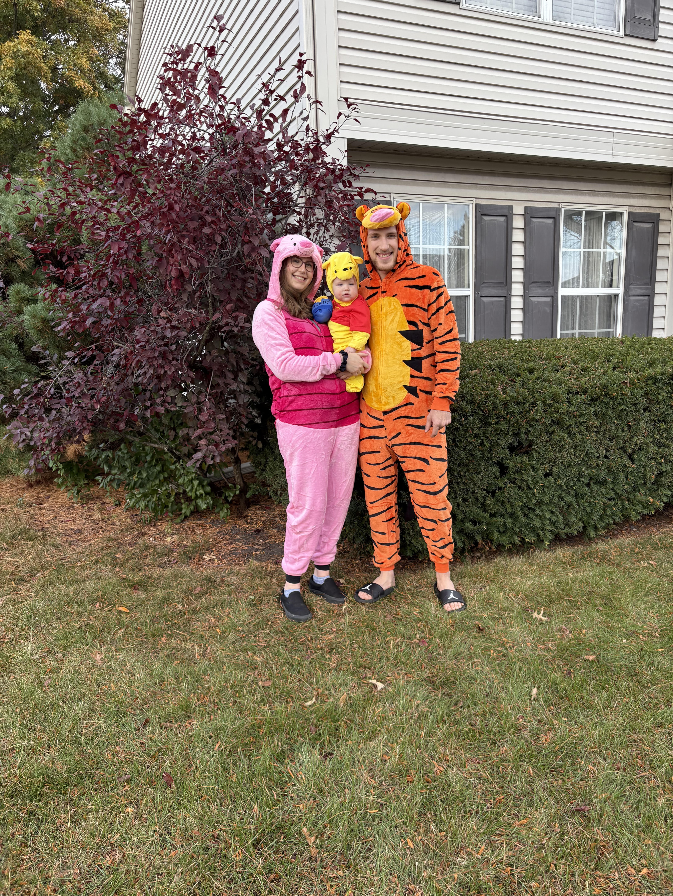

Welcome to an Intro to Caleb
Here Are Hobbies Of Mine
- Video Games
- Whenever I come across the available free time, I enjoy playing video games with friends or on my own. When I play with friends we like to play competitive games such as Rainbow Six Siege. When playing on my own I enjoy story games such as Baldurs Gate 3.
- Hardware
- Since around the 5th grade I've really enjoyed researching hardware. I enjoy fixing tech such as desktops, laptops, phones, etc. I built my own PC and I've also built and later upgraded two of my friends PCs. The focus I attain when working on hardware is quite satisfying.
- Software
- I'd say I really got into software my freshman year of highschool. That year I took a JS class but have never touched that language since. Most complex coding I know is in Python but recently C++ has taken my favor. Also, Ive gotten myself a textbook to teach myself Rust as the language interests me greatly.
Additional Info.
What I Do For Work

I currently work for United Parcel Service, more commonly known as UPS. I've been there since May of 2024. My current schedule is Tues-Sat ~2am-~9am.
UPS' workforce is apart of the Teamsters National Brotherhood, Local 705. We are one of 2 or 3 locals in the entire country that negotiates their own contract, seperate of the master agreement.
I unload trucks, such as the one depicted above. The one above is a 53ft long. Some are 48ft, and others are more around ~36ft. These trucks can have packages of all sorts of sizes and varying weights.
Short Intro. To My Family & I

I married my wife, Aubrey, August 22nd, 2022. We initially met all the way back in the 6th grade and had clicked from the start. We started our relationship in our junior year of highschool.
We have a year and a half old son together and his name is Grayson. He was born Februrary 8th, 2025. Our son has been an amazing addition to our family. Our son inspires us both to better ourselves.